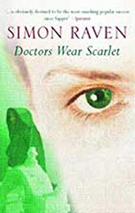
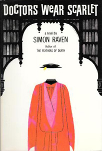
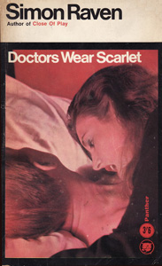
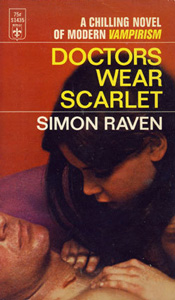

Doctors Wear Scarlet
Dramatis personæ
Richard Fountain
Talented scholar, with a future career as an archaeologist.
Anthony Seymour
Narrator of the story
John Tyrrel
Inspector in the Metropolitan Police.
Westerby
Pustular schoolboy who bullies Stein.
Stein
Jewish schoolboy bullied by Westerby.
Walter Goodrich
Senior Tutor of Lancaster College.
Marc Honeydew
Piers Clarence
Penelope Goodrich
Chriseis
Evil vampire.




Plot Summary
All his life, Richard Fountain has known only success. He is handsome, with an enviable record for school, army and university. A future career as a talented archaeologist seems assured. That is, until he travels to Greece and meets Chriseis.
Chriseis is beautiful, mesmerising and mysterious - also evil. A spellbound Richard is lured into her dark work of vice, vampirism and ritual, high up in the Cretan mountains. When his rescuers finally reach him, he has changed beyond all recognition and is seemingly destined for a tragic end. The final act at a double funeral provides a tumultuous climax to a shocking story.